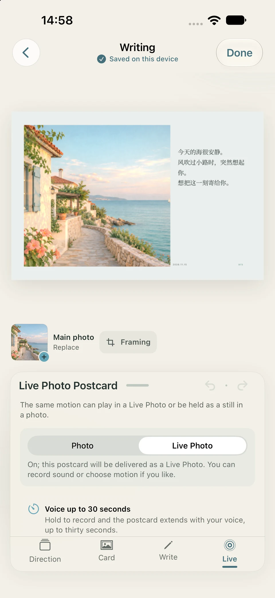
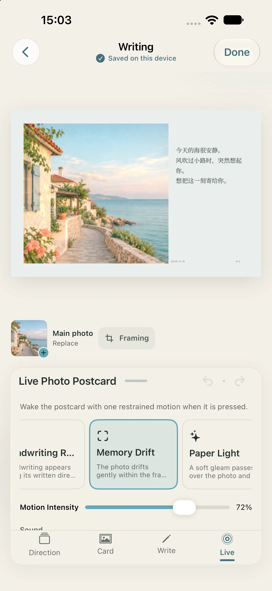
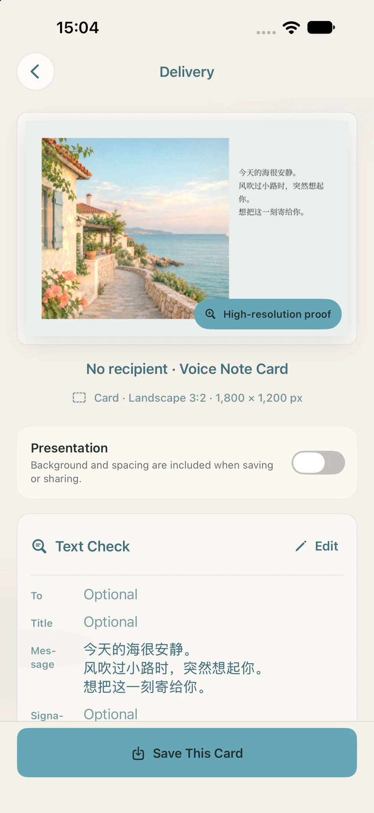
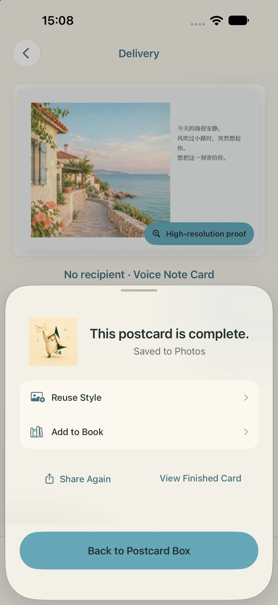

Bring your postcard to life
Continue with the same card from the first guide and make it a Live Photo. See the actual result, then follow the screenshots to find the format and motion controls.
Finish a still-image postcard first, then follow these four steps. Voice is optional; this example uses muted motion. See the questions below if you want to add a recording.
Download the example photo and try it1.Choose Live Photo in Live tools
Finish the photo, note, layout and paper first. Open Live and choose Live Photo. This guide continues with the same postcard as the still-image tutorial.
Check before moving on: The panel says Live Photo is on. Photo delivery keeps the picture only; it does not carry motion or a recording.


2.Choose a motion that suits the picture
Browse the motion effects horizontally. We use Memory Drift, which moves the photo gently inside its frame. Adjust Motion intensity and check the preview, especially the subject and edges.
Check before moving on: Motion should support the photo and note. Lower the intensity or try another effect if the movement becomes distracting.


3.Confirm the format, then save
Tap Done and check the picture and text in Delivery. Return to Live tools if you need to confirm that Live Photo remains selected, then tap Save This Card.
Check before moving on: Wait for generation and the Photos write to finish. Preparing or waiting for Photos is not a completed save.


4.Check playback in Photos
After Saved to Photos appears, open the saved Live Photo in Photos and check the expected motion. If you added a recording, check the volume and audio too.
Check before moving on: Check the local result before sharing. The receiving app and sending method need to preserve Live Photos for full playback.



Questions while making your card
How do I add my own voice?
Find Sound further down the Live panel. If permission is not yet granted, tap Next and decide whether to allow microphone access, then hold to record. Listen before saving. This example demonstrates muted motion and did not record microphone audio. You can continue making a silent Live Photo if access is denied.
Why did the recipient get only a still image?
Some apps or sending methods keep only the still picture. Check motion and audio in the saved Live Photo in Photos first, then check the receiving platform. Test a small send before sharing something important, or keep a separate still-image version.
Why is there an unlock screen when saving?
This example already has delivery entitlement. Claiming the first free delivery requires a connection. Check the current app explanation and Apple confirmation page; you can return to editing first.
Does ordinary creation upload photos or notes?
Ordinary editing, writing, drafts and recordings are handled on device. Sharing a finished card sends it to the destination you choose.
I tapped Save, but cannot find the card. What next?
Check whether Saved to Photos has appeared. If generation is still running, access was denied, or saving failed, follow the current explanation and retry when ready. Cancellation or failure is not a completed save.
The screenshots show the iPhone interface; control placement may differ on iPad or between app versions. The example uses a synthetic image. An independent annotation layer marks the controls without redrawing the interface. Ordinary editing and review can be tried first; delivery entitlement and prices follow the app and Apple confirmation page.